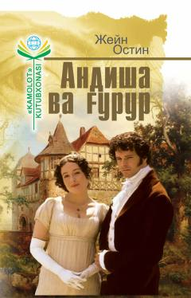

AVElizabet Bennet va Darsi o'rtasidagi sevgi va g'ururning ajoyib hikoyasi.
Jeyn Ostinning 'Andisha va Gurur' romani qishloq dvoryanining qizi Elizabet Bennet bilan mag'rur boy pomeshchik o'g'li Fitsuilliam Darsi o'rtasidagi munosabatlarni tasvirlaydi. Asar 1813 yilda nashr etilgan bo'lib, ingliz adabiyotining eng mashhur asarlaridan biri hisoblanadi. Ushbu o'zbek tarjimasi Muhabbat Ismoilova tomonidan ingliz tilidan bevosita o'zbek tiliga o'girilgan.